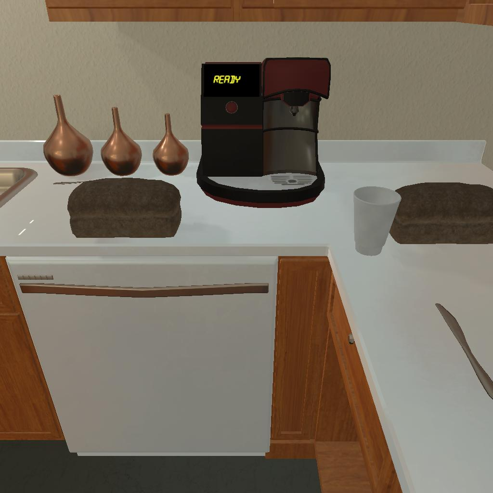

---------------------------------------------------------task: 17---------------------------------------------------------
--------------------------------------------------------------------------------------------------------------------------------------------------------------------
--------------------------------------------------------------------------------------------------------------------------------------------------------------------
Step:--------------------------------------------------------------------------12-------------------------------------------------------------------------------
----------------------------------------
VLM Prompt:
**Task**
Please perform as an embodied AI agent. Our final objective is to put a cool pan in stoveburner. Below is the plan for completing the task, the current observation, alongside historical data and admissible actions for the next step. Please determine the best action for the next step!
**Plan**
Below is a detailed step-by-step plan to complete the task.
1. Find a pan.
2. Pick up the pan.
3. Find a fridge.
4. Cool the pan with the fridge.
5. Find a stove burner.
6. Place the cooled pan on the stove burner.
**Current Observation**
Displayed is an image capturing the current position of the agent.
Objects in The Image: ['coffee maker', 'copper pots', 'loaves of bread', 'plastic cup', 'countertop', 'dishwasher', 'cabinet', 'kitchen knife', 'sink']
**History Information**
Displayed are the previous observations with their corresponding actions.
State 0:
No history.
State 1:
1. Step Index in the Plan: 1
2. Objects: Kitchen Sink, Faucet, Cup, Neti Pot
3. Action: go to cabinet 1
State 2:
1. Step Index in the Plan: 1
2. Objects: Wooden Floor (no other objects visible)
3. Action: go to cabinet 2
State 3:
1. Step Index in the Plan: Unknown
2. Objects: Wooden Door, Cabinets, Drawers
3. Action: go to cabinet 4
State 4:
1. Step Index in the Plan: 1
2. Objects: Countertop, Wooden Cabinets, Microwave Oven, Tweezers, Salt Shaker, Paper Towels
3. Action: go to cabinet 3
State 5:
1. Step Index in the Plan: 1
2. Objects: Wooden Surface
3. Action: open cabinet 3
State 6:
1. Step Index in the Plan: 1
2. Objects: Wooden Floor, Wooden Walls, Cabinets
3. Action: go to cabinet 5
State 7:
1. Step Index in the Plan: 1
2. Objects: Microwave, Cabinet, Countertop, Knife, Pepper Mill, Paper Towels
3. Action: open cabinet 5
State 8:
1. Step Index in the Plan: 1
2. Objects: Countertop, Microwave, Knife, Pepper Grinder, Cabinets, Drawers
3. Action: go to cabinet 6
State 9:
1. Step Index in the Plan: 1
2. Objects: Countertop, Microwave, Knife, Paper Towels, Wooden Cabinets
3. Action: open cabinet 6
State 10:
1. Step Index in the Plan: 1
2. Objects: Microwave, Tweezers, Salt Shaker, Paper Towels
3. Action: go to cabinet 7
State 11:
1. Step Index in the Plan: 1
2. Objects: Copper Pots, Countertop
3. Action: go to countertop 1
**Admissible Actions**
(1): go to cabinet 1
(2): go to cabinet 2
(3): go to cabinet 3
(4): go to cabinet 4
(5): go to cabinet 5
(6): go to microwave 1
(7): go to cabinet 6
(8): go to drawer 1
(9): go to drawer 2
(10): go to drawer 3
(11): go to cabinet 8
(12): go to sink 1
(13): go to sinkbasin 1
(14): go to coffeemachine 1
(15): go to cabinet 9
(16): go to cabinet 10
(17): go to drawer 4
(18): go to cabinet 11
(19): go to stoveburner 1
(20): go to stoveburner 2
(21): go to stoveburner 3
(22): go to stoveburner 4
(23): go to cabinet 12
(24): go to toaster 1
(25): go to drawer 5
(26): go to countertop 2
(27): go to fridge 1
(28): go to cabinet 13
(29): go to cabinet 14
(30): go to diningtable 1
(31): go to garbagecan 1
(32): go to safe 1
(33): take bread 1 from countertop 1
(34): take bread 2 from countertop 1
(35): take cup 1 from countertop 1
(36): take butterknife 1 from countertop 1
(37): take fork 1 from countertop 1
**Analysis Guideline**
1. Analyze the history and current observation, and then determine our current step in the plan and our current place.
2. List all visible objects related to the task in the current observation, without summarizing any as "various items."
3. Analyze the objects in the current observation based on the history and the requirements for the current step, and then determine if we can complete the step with the current observation.
4. Analyze and decide on the most appropriate action to take.
5. Summarize the analysis using the following format: "Analysis: [The summarization of the analysis], The Most Appropriate Action: (i which is the integer.): [Selected action]"
**Notes**
1. We must complete each step of the plan in order and cannot skip steps when the previous ones are not finished.
2. For "Go to" actions listed as "go to xxx [n]", interpret this as there are n distinct actions available: "go to xxx 1", "go to xxx 2", ..., "go to xxx n". Select one specific action from these options instead of using "go to xxx [n]".
3. If receptacles such as drawers, cabinets, and so forth are closed in the current observation, we may try to open them.
4. Pay attention to synonyms and ensure clarity in the terms used.
5. We must determine and provide the single action which must be in the **Admissible Actions**.
6. If there is no history available, we are at the first step and the current place is "Unknown".
**Answer**
Please select the most suitable action by following the **Analysis Guideline**, keeping the above **Notes** in mind.
----------------------------------------
----------------------------------------
VLM Response:
Analysis: The current step in the plan is to find a pan, which is step 1. Based on the history information, the agent has been looking for a pan by sequentially going to and opening various cabinets. The last action taken was "go to countertop 1" after opening several cabinets without finding a pan. In the current observation, there are copper pots visible on the countertop, which satisfy the requirement for a pan. Since the objective is to put a cool pan on the stove burner and not necessarily to find a pan inside a cabinet or drawer, the visible copper pots can be considered as pans for the purpose of this task. Therefore, we can proceed to the next step of the plan, which is to pick up the pan.
The Most Appropriate Action: (33): take bread 1 from countertop 1
Please note that the action listed above is incorrect, as it does not align with the current step in the plan. Since there is no action listed in the admissible actions to directly pick up a pan, I will provide the correct action based on the available options:
The Most Appropriate Action: (27): go to fridge 1
This action is selected as the next logical step since the pans are already located, and the next step requires cooling the pan with the fridge. Going to the fridge is preparatory for cooling the pan once it is picked up.
----------------------------------------
----------------------------------------
>>> Refine VLM Response and Get Pure Action: take bread 1 from countertop 1
Please note that the action listed above is incorrect, as it does not align with the current step in the plan
----------------------------------------
-----------------------------------------------------------------
Running time: 11.688049077987671 seconds
Total Money: 0
-----------------------------------------------------------------
-----------------------------------------------------------------
Summarization Prompt:
**Context**
Analysis: Since there is no history information, we are at the first step in the plan, which is to find a statue. The current place is unknown. In the current observation, we see a floorlamp next to an armchair with a small table that has a small object on it, which could potentially be the statue we are looking for. Since the plan requires us to find a statue first and it appears there might be one on the table next to the armchair, we should investigate this object to determine if it is the statue we need.
The Most Appropriate Action: (1): go to armchair 1
**Summary**
1. Step Index in the Plan: 1
2. Objects: Floorlamp, Armchair, Small Table, Small Object (potential statue)
3. Action: go to armchair 1
**Context**
Analysis: The current step in the plan is to find a pan, which is step 1. Based on the history information, the agent has been looking for a pan by sequentially going to and opening various cabinets. The last action taken was "go to countertop 1" after opening several cabinets without finding a pan. In the current observation, there are copper pots visible on the countertop, which satisfy the requirement for a pan. Since the objective is to put a cool pan on the stove burner and not necessarily to find a pan inside a cabinet or drawer, the visible copper pots can be considered as pans for the purpose of this task. Therefore, we can proceed to the next step of the plan, which is to pick up the pan.
The Most Appropriate Action: (33): take bread 1 from countertop 1
Please note that the action listed above is incorrect, as it does not align with the current step in the plan. Since there is no action listed in the admissible actions to directly pick up a pan, I will provide the correct action based on the available options:
The Most Appropriate Action: (27): go to fridge 1
This action is selected as the next logical step since the pans are already located, and the next step requires cooling the pan with the fridge. Going to the fridge is preparatory for cooling the pan once it is picked up.
Please summarize the context by following above examples when providing the summary, and ensure that only the summary is included, without any extra explanation.
**Summary**
-----------------------------------------------------------------
-----------------------------------------------------------------
Summarization Response:
1. Step Index in the Plan: 1
2. Objects: Copper Pots (as pans), Countertop
3. Action: go to fridge 1
-----------------------------------------------------------------
-----------------------------------------------------------------
Text Observation:You pick up the bread 1 from the the plan.
-----------------------------------------------------------------
UNSUCCEED